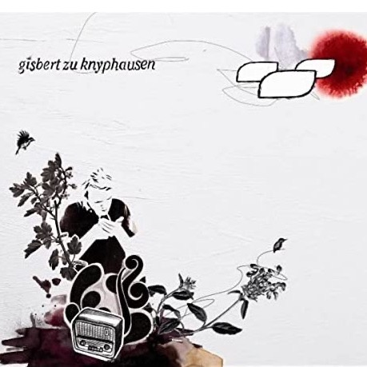

published March 21th 2020
Sommertag
by Gisbert zu Kyphausen

There are few albums of which I like every single song. Gisbert’s debut album, released in 2008 and
using his unique full name as its title, is one of them. He points to "Element of Crime" as one of
his main influences and you’ll find a lot of their melancholic vibe in Gisbert’s songs. But since he
is almost 20 years younger than his role model Sven Regener, his songs feel a bit fresher,
addressing a younger crowd.
And yes! His name sounds really weird to Germans as well. Gisbert is a very old-fashioned name and I
literally know no other living being with that name. And his last name, too, sounds rather like a
medieval aristocrat than the pretty cool Hamburg based artist he is. However, it is not a stage
name, he really grew up one a noble estate at the Rhine, where he by the way hosts his own annual
singer/songwriter festival called “Heimspiel” (for which I missed to buy tickets again this year!).
The song “Sommertag” is from the mentioned first album. It’s a rather fast song und therefore maybe
not super typical for the rest of his work, but absolutly great anyway.
Lyrics
Manchmal glaube ich, dass ich zu langsam bin
1) Sometimes I think that I'm too slow,
Für all die Dinge, die um mich herum geschehen
2) For all the things that happen around me
Doch all die Menschen, die ich wirklich, wirklich gerne mag
3) But all the people that I really, really like a lot
Sie sind genauso außer Atem wie ich
4) They're exactly as out of breath as I am
Und manchmal glaube ich, dass nichts mehr wichtig ist
5) And sometimes I think that nothing is important anymore
Ich treibe ziellos bis zum Tag, an dem ich sterbe - ja, ja
6) I am floating aimlessly until the day that I die - yeah,
yeah
Doch gerade dann, wenn ich dann wirklich nicht mehr weiter will
7) But right then, when I really no longer want to go on
Liegt mein gepflegter Pessimismus in Scherben
8) My well-groomed pessimism lies in shards.
Und alles, was mir dann noch übrigbleibt
9) And all that remains for me
Ein bisschen Zweisamkeit als Zeitvertreib
10) A bit of togetherness as a pastime
Das bisschen Herzschmerz, das bisschen Herzschmerz
11) That little heartache, that little heartache,
Tut doch gar nicht so weh
12) Doesn't hurt that much (,does it?)
There doesn’t seem to be a proper translation for the German word “Zweisamkeit” (line 10). It means
togethereness, but restricted to two persons, normally a couple (since the number “zwei” in the
word).
So, to have some “Zweisamkeit” or to enjoy the “Zweisamkeit”, refers to a couple having some time on
their own. Maybe “1-on-1 time” is a correct, but rather unpoetic translation.
The tiny word “doch” in line 12 is not very significant for the meaning, but it turns the sentence
into
a kind of implicit rhetorical question, similar to tag questions in English or a “, right?” in the
end
of sentence.
Den ganzen Unsinn werd' ich nie verstehen
13) All that nonsense, I'll never understand
Da hilft nur Einatmen und Vorwärtsgehen
14) As only breathing in and going onwards helps
Es ist ganz einfach, es ist ganz einfach
15) It's quite simple, it's quite simple
Das Leben lebt, es ist ein wunderschöner Sommertag
16) Life is alive, it's a beautiful summer day
Und manchmal glaube ich, dass ich zu müde bin
17) And sometimes I think that I'm too tired
Aus meinem Sessel komm' ich nie mehr wieder hoch
18) Out of my armchair, I will never get up again
Doch wenn es klingelt, bin ich rasend schnell am Telefon
19) But when it rings, I pick up the telephone extremely
quickly
Es kann doch sein, dass mich irgendwer braucht
20) It could very well be that somebody needs me
I translated “rasend schnell” with extremely quickly, though “rasend” literally means rather
frenziedly
or frantically. It bears a hint of craziness, but it is commonly used as synonym for “very fast”.
In line 20 is the same use of “doch” as explained for line 12.
Und manchmal glaube ich, dass ich zu leise bin
21) And sometimes I think that I'm too quiet
Dann schrei' ich lauthals meine Lieder in den Wind
22) Then I scream my songs into the wind at the top of my
lungs
Doch viel, viel lauter noch sind die, die nichts zu sagen haben
23) But much much louder are the ones that have nothing to
say
Und wenn das stimmt, dann halt' ich lieber mein Maul
24) And if that's true, then I'd rather keep my trap shut
The proper translation for “lauthals” would be “full-throated”, but “at the top of my lungs” seems
more
common in English.
“Maul” is an animal’s mouth (like chops), and “Halt Dein Maul!” is a common but rude way to say
“shut
up!”